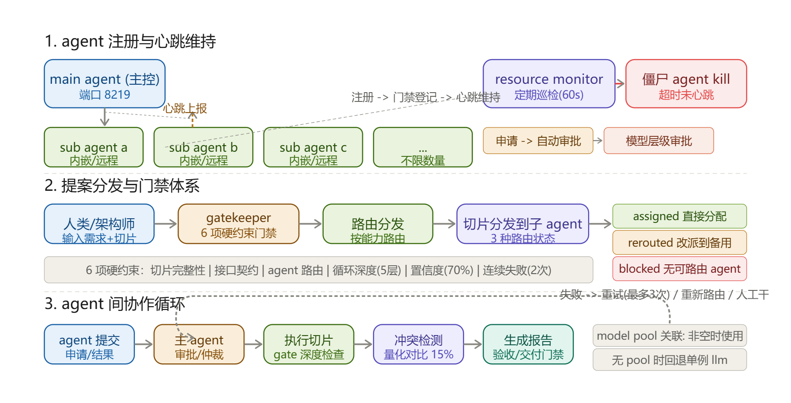
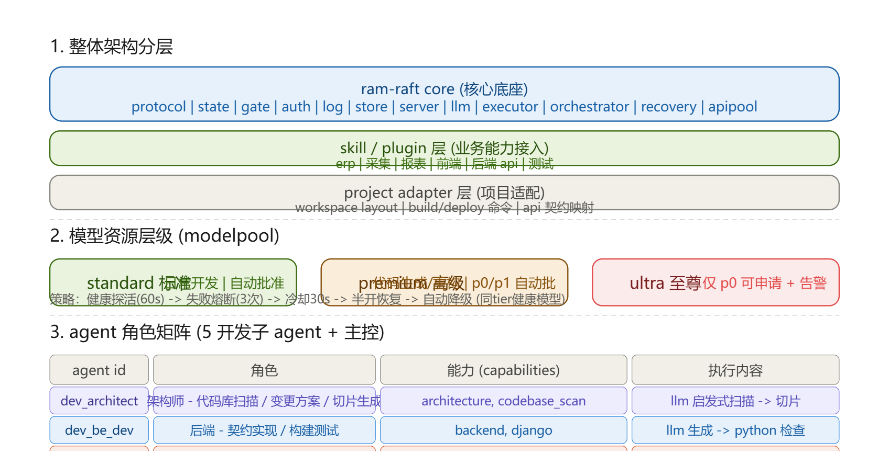
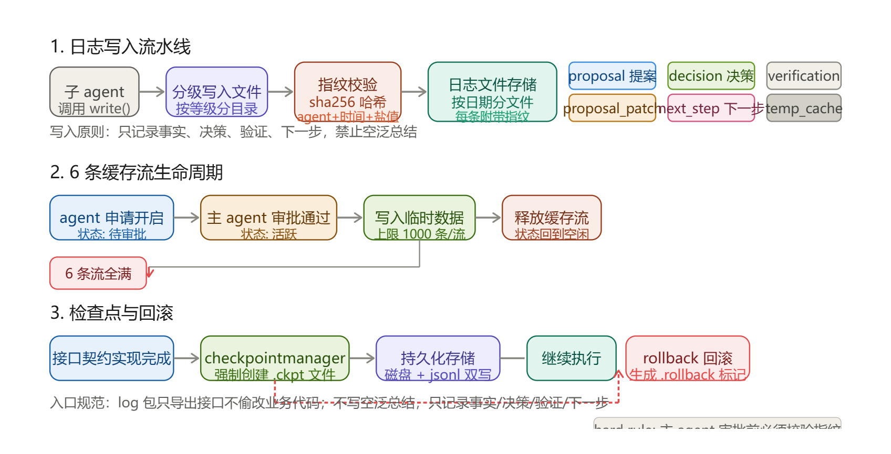

关于 Agent 集群工程，实际上它是一套在短时间内搭出来的、相对规范完整的 Agent 协作模式。核心目标不是让单个 Agent 多强，而是让多个 Agent 能稳定地一起完成一件复杂的事。
设计理念：用 RAFT 做调度隐喻
我的开发理念主要参考了 RAFT 的中台 Agent 调度思想：一个主控 Agent 负责整体协调，各个子 Agent 相互隔离，各自承担明确的职责。中台不替子 Agent 干活，只负责分发、仲裁、回滚、容灾。
各 Agent 相互隔离，搭建规范合理的日志系统、信息传输规范，以及足够详细的容灾方案。对于开发性质的 Agent，最重要的是规范化、可回滚、安全性、系统稳定性（资源占用、进程冲突等）。
全栈开发集群的构成
我这里搭建的是一个全栈开发集群，包含中台和多个开发子 Agent：前端、后端、架构、测试、环境。每个 Agent 有明确的能力边界和输入输出契约，通过中台统一调度。

上图是整个集群的运行骨架：子 Agent 注册并维持心跳，人类/架构师输入需求和切片后，先经过 gatekeeper 的硬约束门禁，再由中台按能力路由分发。执行过程中有冲突检测、报告生成、验收门禁，失败则进入重试/重新路由/人工干预。
架构分层与角色矩阵
为了让集群不至于变成一锅粥，我把架构拆成了三层：核心底座层、技能/插件层、项目适配层。底座负责协议、状态、门禁、鉴权、日志、存储、执行、编排、恢复等通用能力；上层才接入具体业务（前端、后端、测试、采集等）。

模型资源层级（modelpool）也值得单独说一下：不是每个 Agent 都配最猛的模型，而是按任务优先级分级——标准开发自动批准、premium/高级任务自动批 P0/P1、ultra 仅 P0 可申请并告警。这样既省 token，也避免资源争抢。
日志、缓存与回滚
多 Agent 一起跑，日志是救命稻草。我的设计是：日志只记录事实、决策、验证、下一步，禁止空泛总结；写入时带 sha256 指纹校验，按日期分文件存储，支持分级目录。缓存流则需要主 Agent 审批，单流上限 1000 条，6 条全满时触发保护。

检查点（checkpoint）和回滚（rollback）是安全底线。接口契约实现完成后，checkpoint manager 强制创建 .ckpt 文件，磁盘 + JSONL 双写。一旦后续失败，按 rollback 标记回到上一个安全边界，而不是让 Agent 在错误状态上继续 hallucinate。
动态性：新 Agent 怎么接入已有协作关系
不论前期设计多详细，实际工作里一定会出现预料外的 Bug 或需求扩展。所以系统规范的同时必须保证灵活。
最典型的场景：一个已经完善的协作关系里，突然加入一个新的 Agent。它的业务功能有些独有、有些和其他 Agent 重叠，能力差异和资源需求也不同。怎么在短时间内适配进当前关系、确保稳定工作？
这需要中台具备能力发现与重新路由的能力：新 Agent 注册时声明 capabilities 和约束，中台重新计算路由表，对冲突能力做优先级仲裁，对新增能力开放新的任务切片入口，并在前几次执行时启用更严格的门禁和观测。
对 AI 祛魅：非理想场景清单
我们习惯了 AI 跟我们说当前项目有多好、多独特、多有竞争性，即使自查也是不痛不痒的小问题。但如果你是做代码开发，可能没问题——史山能跑就行，后续大不了继续堆史。
然而在 AI Agent 开发里，我们的角色是架构设计、工作流设计、协作关系设计，是近乎抽象但要保持逻辑线路的工程师。所以我们必须不断考虑最坏情况，抛开所有理论条件。
- 单步 LLM 调用失败、JSON 解析失败、文件写入失败、shell 失败、测试失败，分别进入什么状态？
- DAG 是否允许并行分支？并行分支争抢同一文件时如何处理？
- 数据库迁移、远程 API 调用、部署动作是否支持回滚？不支持时如何阻止自动执行？
- Agent 心跳丢失后，是 kill 还是降级？未完成的任务如何移交？
- 模型池耗尽时，是排队、降级到单例 LLM，还是拒绝新提案？
这样的问题一天能摸出来几十个。有些重要，有些不重要，但都是基于实际场景推理出来的非理想场景。这并不是八股文，因为不上手搭建开发，你很难想到会出现什么问题。所以 AI Agent 开发的第一件事，是对 AI 祛魅。
后续预告
后面我会拆开这套架构，结合实际设计讲解开发思路以及需要注意的问题：从 gatekeeper 的硬约束设计，到 checkpoint/rollback 的实现细节，再到新 Agent 动态接入时的路由重算。希望把这套骨架真正变成能跑、能扩展、能容灾的系统。
—— RaM